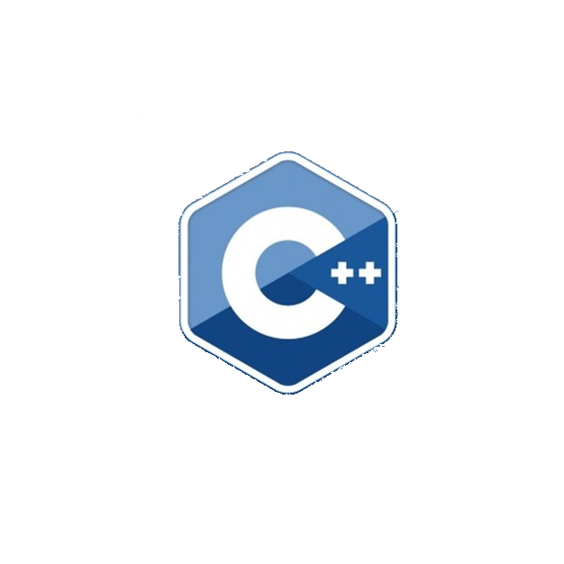

C++
C++ es un lenguaje de programación con la intención de su creación fue extender al lenguaje de programación C mecanismos que permiten la manipulación de objetos. En ese sentido, desde el punto de vista de los lenguajes orientados a objetos, C++ es un lenguaje híbrido
Algoritmo
Es una secuencia de instrucciones que están escritas en un determinado lenguaje
ALGORITMO EN C++
Librerias
Contienen el código objeto de muchos programas que permiten hacer cosas comunes, como leer el teclado, escribir en la pantalla, manejar números, realizar funciones matemáticas, etc
Funciones
es un bloque de código que realiza alguna operación. Una función puede definir opcionalmente parámetros de entrada que permiten a los llamadores pasar argumentos a la función. Una función también puede devolver un valor como salida
Main
Es donde se dan las ordenes y se crean las estructuras lógicas
Instrucción
terminan en (;) y permiten dictarle a la maquina lo que debe hacer
Variable
es una instrucción especial que reserva un espacio en la memoria para guardar información
String = palabra
Char = simbolo
Float = decimal
Int = entero
Bool = binario
Void = nada
La declaración es cuando se reserva el espacio de memoria para crear una variable
Estructura lógica
Cout: permite mostrar por pantalla cualquier tipo de dato
Cin: una instrucción que permite al usuario digitar algo lo cual guardara en una variable
